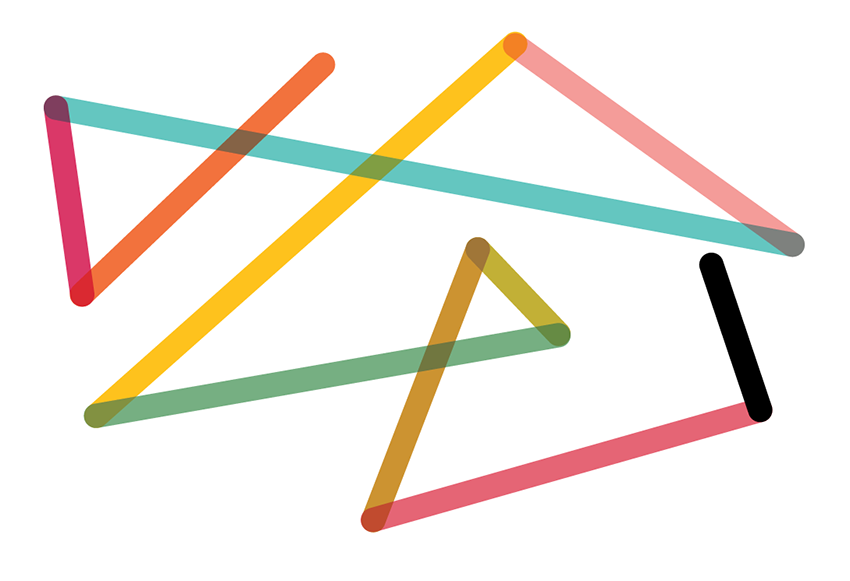

Learning Style: Concrete Random Thinker
June 19, 2014
Today I'll be looking at my Gregorc thinking style: Concrete Random and how it relates to my learning experience at Dev Bootcamp. For those of you who don't know Gregorc thinking style is broken up into four learning styles: Concrete Sequential, Abstract Sequential, Concrete Random, and Abstract Random. Here's a chart to help you get a sense of what each different learning style means:

Being a Concrete Random thinker I am prone to taking risks, working indepedently and like experimenting to find the answers. I also enjoy competitive environments and am not a huge fan of being micro-managed. I think this thinking style is actually well suited towards the Dev Bootcamp experience, except for the independent learning part! I do enjoy and feel most comfortable learning on my own, so Phase 0 has been great.
However, pairing up has been really good to break out of my normal learning routine and has ended up teaching me things I wouldn't have gotten to on my own. Also, I will be doing much more pairing and group learning as I start Phase 1, where I'll be going into DBC campus every day. This is going to be a very heavily stimulating environment and I am definitely worried that I might not get enough "quiet, alone" time as I might need to digest everything that gets thrown my way. Making this "getaway" time will be important for my success, so I can feel fresh and ready to take on group challenges.
My biggest struggle in Phase 0 has been keeping on track and not going down a rabbit-hole of interesting, yet tangent to my task, topics. This is definitely due to my CR thinking style. I like to experiement, I like to cross-reference, and sometimes this can keep me from keeping to the task at hand. This is something that might actually improve upon going into DBC and being in a group environment where I will need to stay focused to keep up with the group.
As a CR, I often do struggle with routines, as I like to be spontaneous, this is something I would like to work on and is why I initially signed on to DBC. It seemed to offer the right amount of structure yet a low level of hierarchy. My focus here is to become as much of a well-rounded learner as possible.
Here's to starting Phase 1 next week! Wish me luck folks. :)